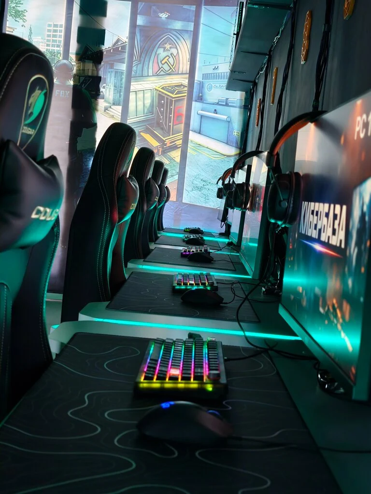
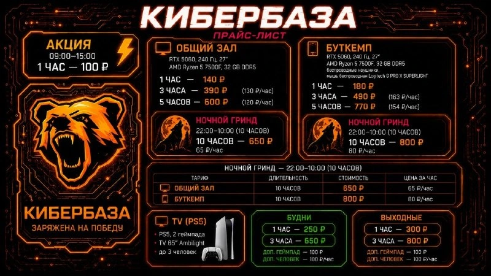
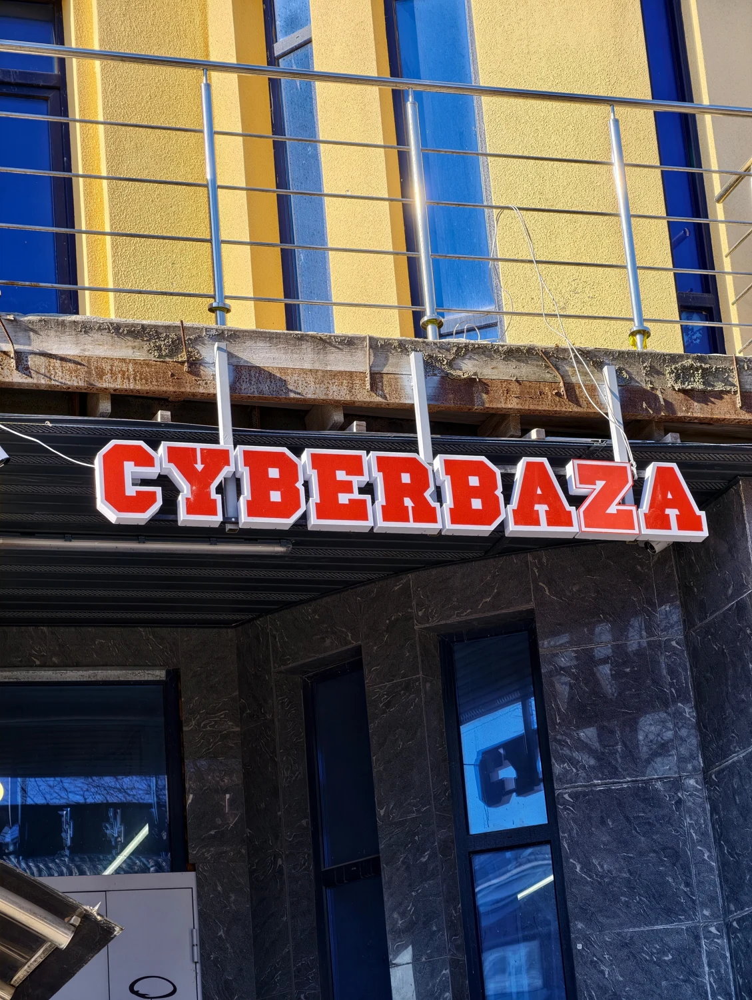

Своя сессия
1 час — 140 ₽ · 3 часа — 390 ₽
600 ₽ 5 часов · актуальность уточняется
Выбрать время ↗Кибербаза на Коммунистическом, 50а.
Выбери ПК и время — посмотри, как может работать бронь онлайн.

По прайсу от 23.07.2026, актуальность уточняется.
Действующие условия — по телефону.
1 час — 140 ₽ · 3 часа — 390 ₽
1 час — 180 ₽ · 3 часа — 490 ₽
Общий зал — 650 ₽ · Буткемп — 800 ₽

Источник: публикация клуба в Telegram от 23.07.2026. Не подтверждение действующих цен.
Конфигурации — из опубликованного прайса клуба.
Текущее оборудование и количество мест уточняются.
Демо-статусы обновляются каждые 12 секунд.
Это не реальные свободные места клуба.
Расположение, количество ПК и зоны демонстрационные.
Демонстрация, не настоящая бронь.
Ничего не отправляем и не сохраняем.
Так будет выглядеть финал после подключения.
Сейчас это мок: бронь не создана, данные никуда не отправлены.
Свободные места и бронь подтягиваются сами — после подключения поддерживаемой системы управления. Бронь можно подключить ссылкой или виджетом программы клуба: такой подход используют и томские клубы. Точный способ зависит от возможностей вашей системы.
2 этаж · Вход справа от супермаркета «Чижик»
Действующие цены и настоящая бронь — по телефону.
2ГИС / Маршрут ↗